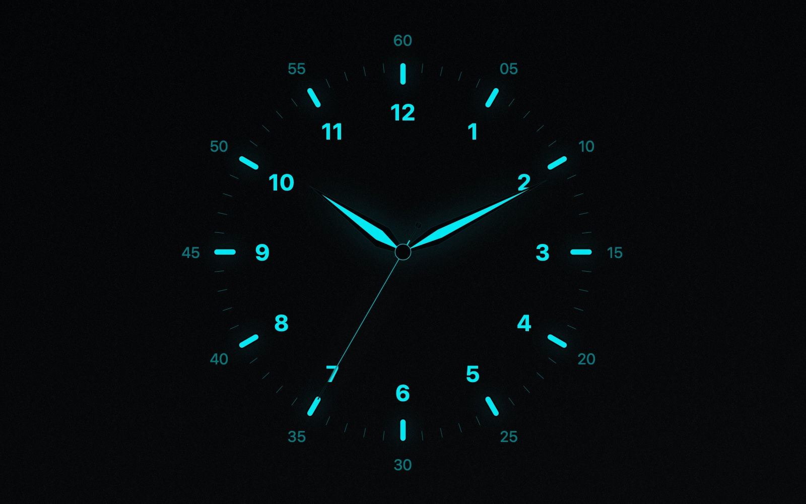
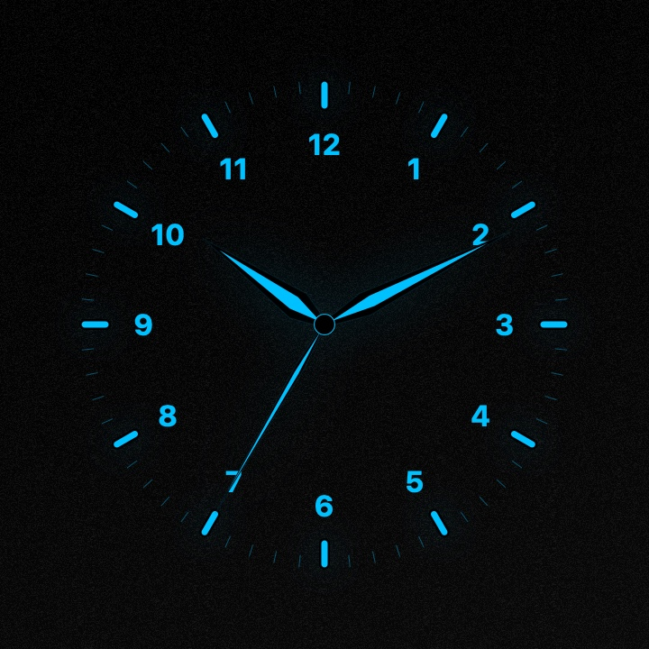
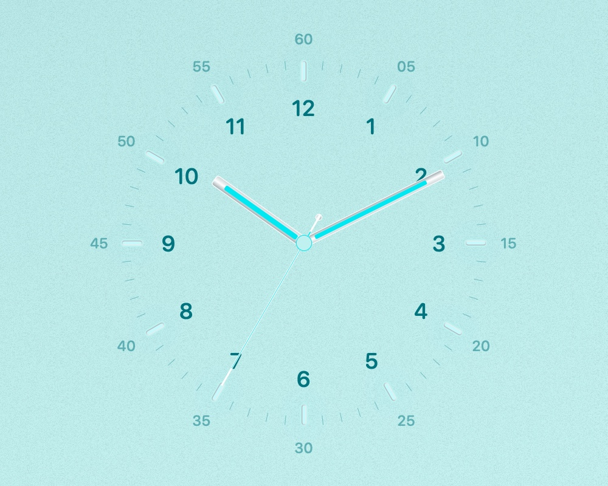
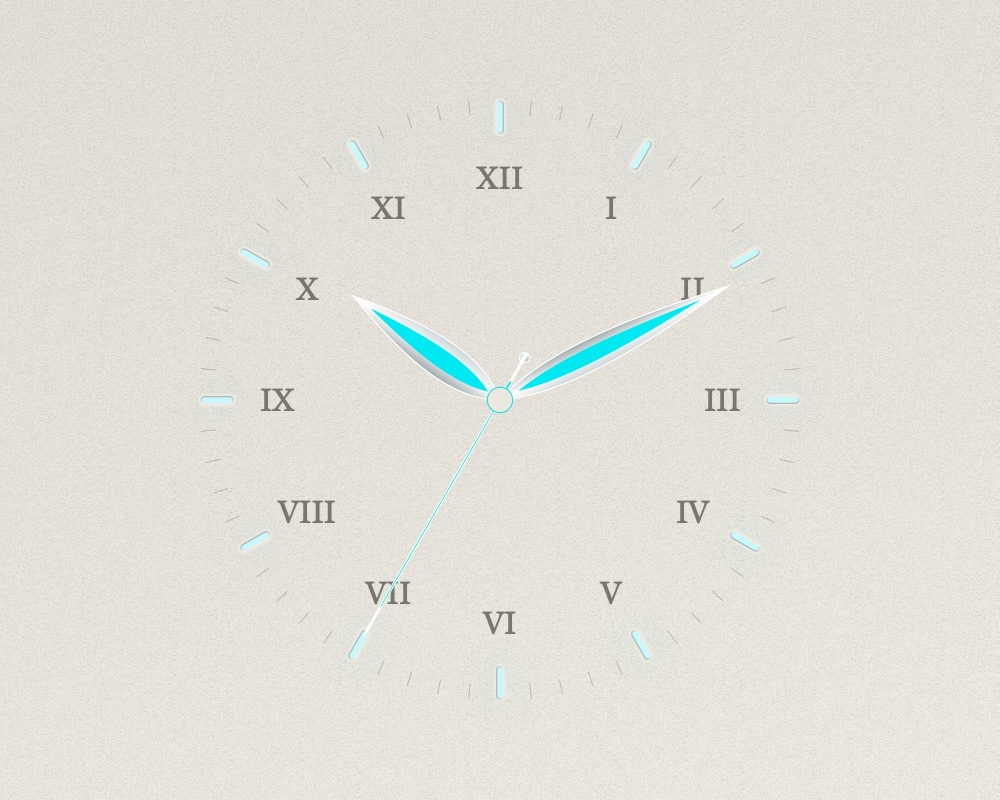
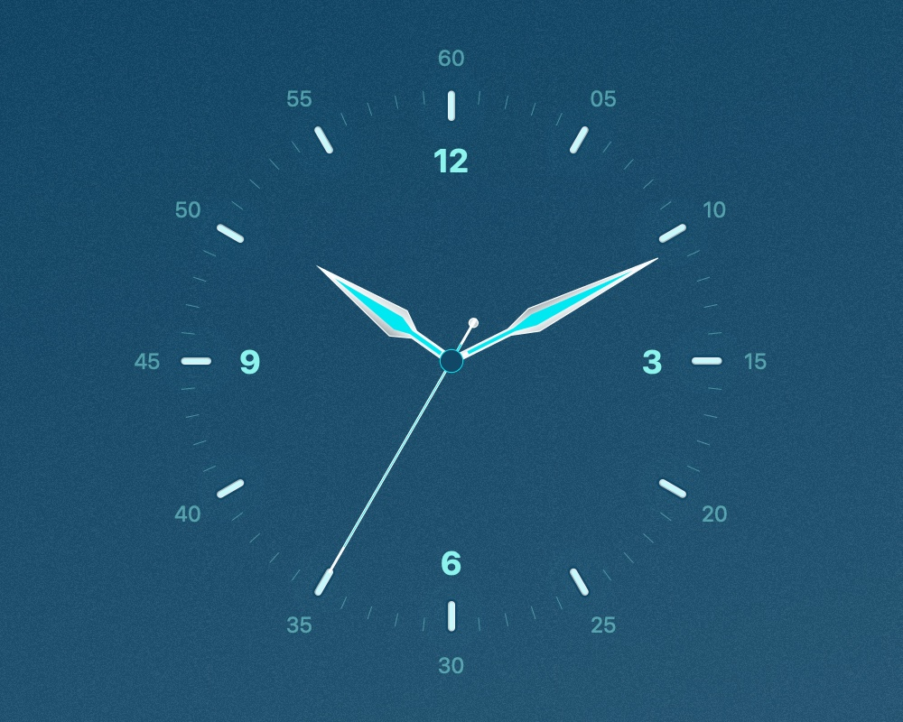
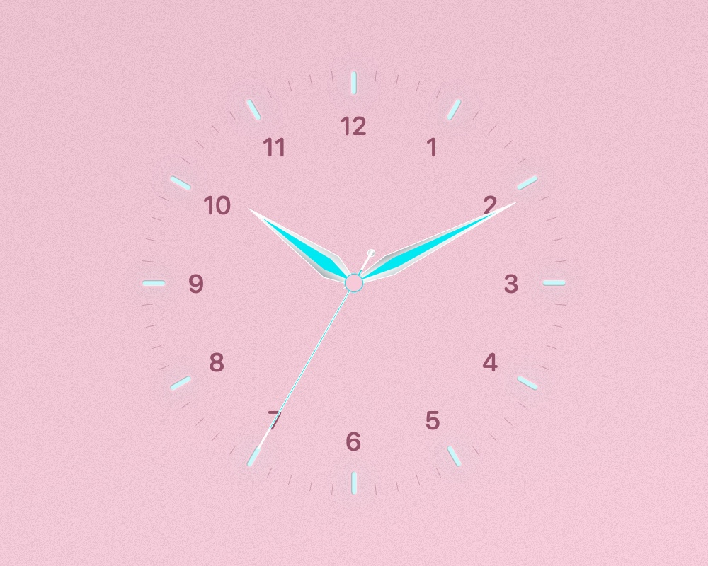
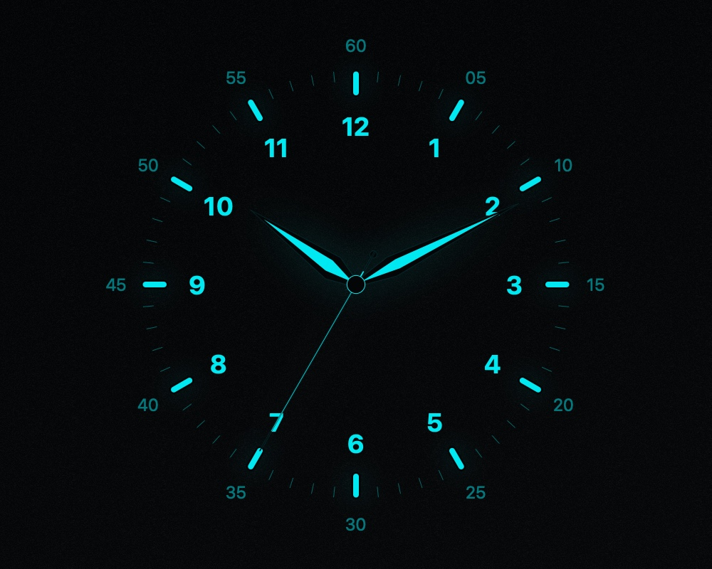
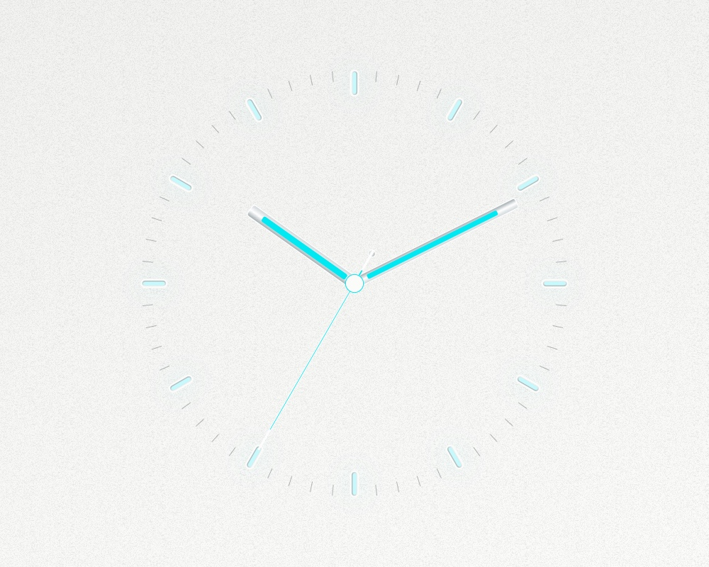

A CLOCK SCREENSAVER FOR MAC
A different
hand in time.
Six hand styles. Eleven dials. A familiar face with a little more room for you.
Download for macOSv1.0.0 / macOS 15.5+ / Apple Silicon + Intel

01 / THE HANDS
Small changes.
Distinct character.
Choose the hour, minute, and second hands separately. Keep a matching set or combine your favorites.

The preview shows a matching set. The default screensaver pairs Dauphine hour and minute hands with a Needle second hand.
02 / THE DIALS
Find your
time of day.
Paper texture, coordinated colors, and a choice of numerals. Six looks from the eleven available dials.
{kind=link}

TurquoiseBaton + Needle / Day ↗{kind=link}

IvoryLeaf + Needle / Day ↗{kind=link}

OceanSword + Needle / Day ↗{kind=link}

RoseDauphine + Needle / Day ↗{kind=link}

NoirDauphine + Needle / Night ↗{kind=link}

WhiteBaton + Needle / Day ↗Images are native renders of the screensaver at 10:10:35. Select an image to view it larger.
03 / THE DETAILS
Make it
your clock.
- Appearance
- Day, Night, or follow your Mac. Eleven dial designs and nine palette choices for the Original dial.
- Movement
- A once-per-second Quartz tick, eight-step Mechanical motion, or a continuous Smooth sweep.
- Finishing touches
- Arabic, Roman, quarter-hour, or no numerals. Adjust typography, lume, glow, outer minute numbers, and clock size.
- Live preview
- See your choices in Options. Save to apply them, or Cancel to keep your previous look.
04 / ON YOUR MAC
Your next
idle moment.
Download Bauhaus Hands macOS 15.5 or later · Intel and Apple Silicon
- Download & unzip
Open the ZIP to find
BauhausHands.saver. - Open the screensaver
Double-click it and follow the macOS installation prompt.
- Choose your hands
Select Bauhaus Hands in System Settings → Screen Saver, then open Options.
Compatibility & installation notes
This build is locally signed and is not Apple-notarized. macOS may ask you to approve it in Privacy & Security.
On macOS Tahoe, Options can stop responding after the preview’s Done button. Quit and reopen System Settings, then try Options again.
Universal compilation, signature, rendering, and settings checks passed. Installation and System Settings hosting have not been fully validated.